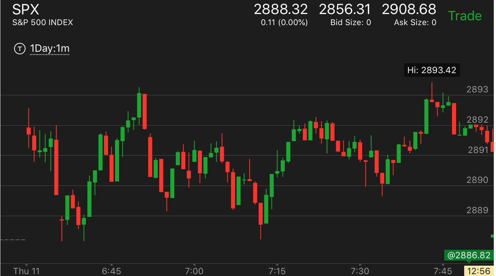
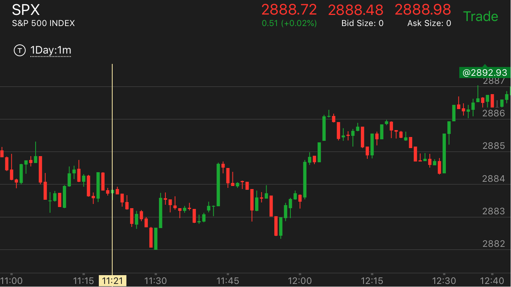

平衡原理：这个走势关键在于在高点或者低点的停留时间，如果很短。那么未来会回到这个点，或者超过这个点
- 如果上涨或者下跌的时候，中间走平时间比较长，比如超过10分钟，而高点或者低点停留时间很短，那么未来至少回到这里
- 这个走势不需要提前做，但是在模棱两可的时候，会提供线索。帮助下定决心
用平衡原理判断未来走势
见到底部后反弹太快
见到底部后反弹太快
TOP

图示：7:40见到底部后，反弹太快了。它很快就走出了两段走势。表示一定会跌。然而更大的走势有真空没有填补。
所以它开始下跌了。但是没有创新低。而是大幅回撤。然后从9：10开始缓慢上涨。

图示：
1. 8：10出现了双底，加速走势。但是反弹速度很快。很快就出现了两段走势。结束了。这样一定会跌。一方面有了两段走势。
一方面它从底部反弹太快，一定要回到底部附近。
2. 11:05出现了底部。它也是飞快的反弹。然后回调，继续涨。因为它第一浪涨很大，所以第二浪不需要涨很多，也构成了两段走势。然后大跌。
这个更大的走势没有真空要填。所以跌出来新低。
用平衡原理判断未来走势
TOP

图示：6:50两段上涨后，立刻拉回，它自己又出现了两段下跌。7：14分两段下跌结束。这时可以分析。它一定会回到6：50开始的高点
的。但是也一定会回到7：14达到的低点的。因为两者都停留时间很短。而且都是两段走势。另外6：50开始的两段下跌走势，中间走平时间很长。而它在低点立刻拉回，
说明未来会低于这个点。另外在7：14的低点没有加速下跌。说明不是底部。未来一定会低于它。但是也不能盲目去做。小的走势一定会出现的。只是要在两可的时候，可以看到决心。

图示：11：30从底部反弹后，它拉回走平的时间比较长，11：45冲高后，它立刻拉回，11：55出现了加速下跌后，反弹，可以想象，它一定会回到
11：45出现的高点的。12：10出现高点后也一样，它出现了两段下跌走势后，继续大涨。